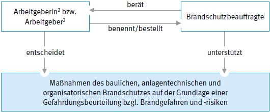

Die Verhütung und die Verhinderung der Ausbreitung von Bränden sowie die Bekämpfung von Entstehungsbränden sind Gemeinschaftsaufgaben aller im Betrieb beschäftigten Mitarbeiter und Mitarbeiterinnen. Der Unternehmer bzw. die Unternehmerin, die Leitung einer Einrichtung2 trägt die Verantwortung für die Erreichung dieser Schutzziele im Betrieb. Zum Aufbau einer hierzu erforderlichen Brandschutzorganisation und für die damit verbundenen vielfältigen Aufgaben, sollte der Unternehmer oder die Unternehmerin zur Beratung Brandschutzbeauftragte bestellen.
Der Unternehmer bzw. die Unternehmerin hat die Dokumentation(en) von Brandschutzbeauftragten gemäß Ziffer 26 Kapitel 3 dieser Schrift mindestens einmal jährlich einzufordern. Dieser Jahresbericht soll mindestens den Bearbeitungsstand der übertragenen Aufgaben darlegen.

Abb. 1 Grundstruktur im betrieblichen Brandschutz
2 Im folgenden Unternehmer bzw. Unternehmerin genannt
Brandschutzbeauftragte können gemäß Musterbauordnung für Gebäude besonderer Art oder Nutzung (Sonderbauten) aufgrund eines Brandschutzkonzeptes oder einer Baugenehmigung mit brandschutztechnischen Auflagen gefordert werden.
Insbesondere werden Brandschutzbeauftragte z. B. für folgende Sonderbauten gefordert:
Die Bestellung von Brandschutzbeauftragten kann auch aufgrund von vertraglichen Vereinbarungen, z. B. mit Versicherungen, Kunden, Lieferanten erforderlich werden.
Darüber hinaus ist nach Arbeitsstättenverordnung, in Verbindung mit der Technischen Regel für Arbeitsstätten (ASR) "Maßnahmen gegen Brände" ASR A2.2, die Vorgehensweise zur Ermittlung der Notwendigkeit von Brandschutzbeauftragten nach Kapitel 1.2 dieser Schrift (Gefährdungsbeurteilung) zu beachten.
Für den Aufbau einer geeigneten Brandschutzorganisation müssen zunächst in einer Gefährdungsbeurteilung die branchen- und betriebsspezifischen Brandgefährdungen ermittelt und die damit verbundenen Risiken bewertet werden.
Gefährdungen im Sinne des Arbeitsschutzes können sich insbesondere ergeben durch
Für die Ermittlung und Bewertung der betriebsspezifischen Brandgefährdungen sind folgende Faktoren zu betrachten:
Zur Durchführung der Gefährdungsbeurteilung wird auf das Arbeitsschutzgesetz (ArbSchG) § 5 "Beurteilen der Arbeitsbedingungen", die Technischen Regeln für Arbeitsstätten (ASR) ASR V3 "Gefährdungsbeurteilung" und ASR A2.2 "Maßnahmen gegen Brände", die Technischen Regeln für Gefahrstoffe (TRGS) "Gefährdungsbeurteilung für Tätigkeiten mit Gefahrstoffen" und die TRGS 800 "Brandschutzmaßnahmen" verwiesen.
Normale Brandgefährdung liegt vor, wenn die Wahrscheinlichkeit einer Brandentstehung, die Geschwindigkeit der Brandausbreitung, die dabei freiwerdenden Stoffe und die damit verbundene Gefährdung von Beschäftigten und anderen Personen sowie Umwelt- und Sachwerte durch Rauch oder Wärme vergleichbar gering sind wie z. B. bei einer Büronutzung.
Wird für den betrachteten Betrieb eine Brandgefährdung ermittelt, die über eine normale Brandgefährdung hinausgeht und/oder sind aufgrund erhöhter Risiken besondere Maßnahmen zur Erreichung der Schutzziele erforderlich, sollte ein Brandschutzbeauftragter oder eine Brandschutzbeauftragte bestellt werden.
Für Objekte unterschiedlicher Art und/oder Nutzung sowie mit verschiedenen Betrieben (z. B. Einkaufszentren, Industrie-, Gewerbe- und Technologieparks, Forschungseinrichtungen) ist aufgrund von gemeinsamen Rettungswegen, Mischnutzungen und Schnittstellen zwischen den Betrieben die Koordination von Brandschutzbeauftragten zu empfehlen.
Für diese Objekte sollte eine übergreifende Gefährdungsbeurteilung durchgeführt werden. Der Betrachtung von technischen und organisatorischen Schnittstellen, z. B. den Abhängigkeiten von Energie- und Produktionsströmen, der Benutzung der gleichen Flucht- und Rettungswegen und Sammelstellen sollte dabei besondere Beachtung zukommen.
Brandschutzbeauftragte sollten vergleichbar mit der betrieblichen Stellung der Fachkraft für Arbeitssicherheit – unmittelbar – der Unternehmerin oder dem Unternehmer unterstellt sein. Sie sollten zu allen den Brandschutz betreffenden Fragestellungen des Unternehmens schon bei der Planung rechtzeitig eingebunden werden.
Brandschutzbeauftragte arbeiten mit anderen Beauftragten im Arbeits-, Gesundheits- und Umweltschutz zusammen und werden in die Arbeit des Arbeitsschutzausschusses eingebunden.
Brandschutzbeauftragte sind bei der Anwendung ihrer brandschutztechnischen Fachkunde weisungsfrei.
Sie dürfen wegen der Erfüllung der ihnen übertragenen Aufgaben nicht benachteiligt werden.
In Betrieben mit einer Werkfeuerwehr können die Aufgaben von Brandschutzbeauftragten der Werkfeuerwehr übertragen werden.
Werden mehrere Betriebe von einer gemeinsamen Werkfeuerwehr betreut, sollte zur Sicherstellung einer einheitlichen Gefahrenabwehrorganisation, die Koordination von einzelnen Brandschutzbeauftragten durch die Werkfeuerwehr erfolgen.